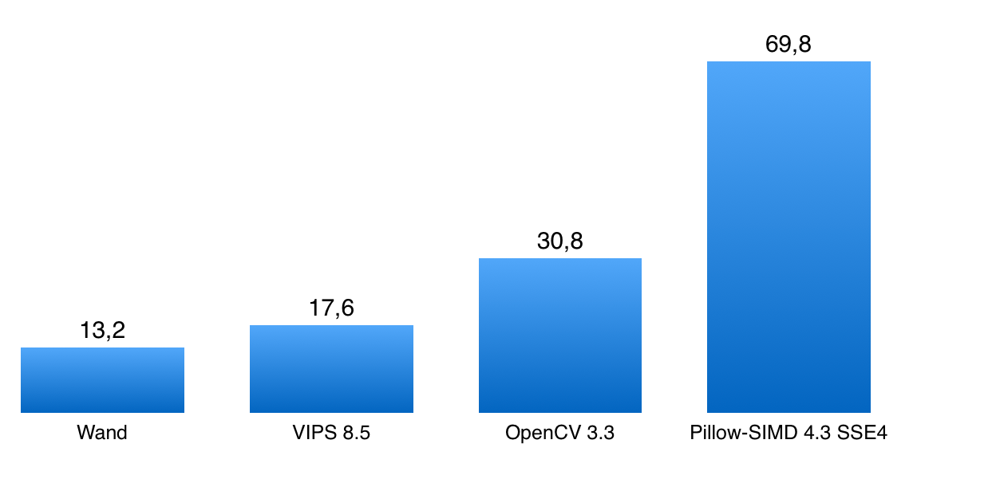
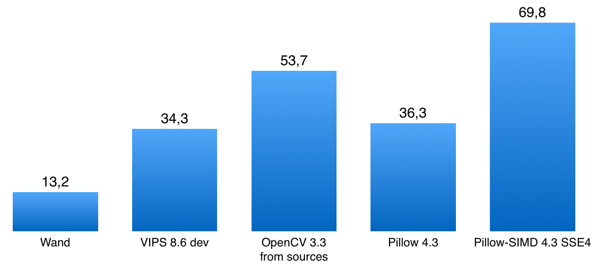

В чем проблема?
cv2.GaussianBlur(im, (window, window), radius)
radius = 3 58 ms

radius = 30 880 ms
Александр Карпинский, Uploadcare
Член команды Pillow.
Автор Pillow-SIMD.
Сервис обработки картинок на лету в Uploadcare.
Сайт: python-pillow.org
Сайт: opencv.org
from PIL import Image, ImageFilter.BoxBlurim.filter(ImageFilter.BoxBlur(3))...
import cv2cv2.blur(im, ksize=(3, 3))...
cv2.GaussianBlur(im, (window, window), radius)
radius = 3 58 ms
radius = 30 880 ms
im.filter(ImageFilter.GaussianBlur(radius))
radius = 3 60 ms
radius = 30 61 ms
Загрузка, поворот на 90°, уменьшение в 2,5 раза, размытие, запись в JPEG.
Если подождать и собрать самому.

Страница с результатами
https://python-pillow.org/pillow-perf/
Фреймворк для тестирования
https://github.com/python-pillow/pillow-perf
Реальное время выполнения не меняется.
Пропускная способность растет пропорционально количеству ядер.
Реальное время выполнения уменьшается.
Пропускная способность растет далеко не линейно от количества ядер.
Реальное время выполнения уменьшается.
Пропускная способность растет.
Win-win.
Отпускают GIL
Pillow, OpenCV, pyvips, Wand
Не отпускает
pgmagick
Создавать для обработки не более N + 1 воркеров,
где N — количество ядер или потоков процессора.
Воркер — процесс или поток, занятый обработкой.
Долгая работа процессора блокирует event loop,
даже если библиотека отпускает GIL.
@gen.coroutinedef get(self, *args, **kwargs):im = process_image(...)...
@run_on_executor(executor=ThreadPoolExecutor(1))def process_image(self, ...):...@gen.coroutinedef get(self, *args, **kwargs):im = yield process_image(...)...
>>> from PIL import Image>>> %time im = Image.open('cover.jpg')Wall time: 1.2 ms>>> im.mode, im.size('RGB', (2152, 1345))
>>> from PIL import Image>>> %time im = Image.open('cover.jpg')Wall time: 1.2 ms>>> im.mode, im.size('RGB', (2152, 1345))>>> %time im.load()Wall time: 73.6 ms
from PIL import ImageImage.open('trucated.jpg').save('trucated.out.jpg')IOError: image file is truncated (143 bytes not processed)
from PIL import Image, ImageFileImageFile.LOAD_TRUNCATED_IMAGES = TrueImage.open('trucated.jpg').save('trucated.out.jpg')
| Pillow | VIPS | OpenCV | IM | |
|---|---|---|---|---|
| Количество кодеков | 17 | 12+ | 8 | 66 |
| Битые картинки | ✅ | ✅ | ✅ | ✅ |
| Ленивая загрузка | ✅ | ✅ | ❌ | ❌ |
| Чтение EXIF и ICC | ✅ | ✅ | ❌ | ✅ |
| Автоповорот EXIF | ❌ | ✅ | ✅ | ✅ |
cv2.imread(filename)
cv2.imread(filename, flags=cv2.IMREAD_UNCHANGED)
OpenCV не рассчитан на работу с непроверенными источниками.
Изображение в OpenCV — это массив numpy.
import numpyfrom PIL import Image...pillow_image = Image.open(filename)cv_image = numpy.array(pillow_image)
import numpyfrom PIL import Image...pillow_image = Image.fromarray(cv_image, "RGB")pillow_image.save(filename)
Презентация: homm.github.io/image-libs-2017/
Написать: homm86@gmail.com